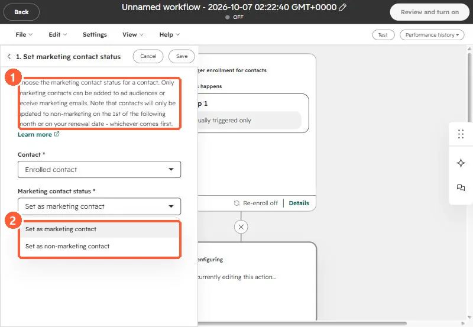

Short answer
On an IT services client's sync, we agreed to bring contacts in as non-marketing and have HubSpot workflows decide who becomes a marketing contact. The action is Set marketing contact status. In my demo, its help text says contacts are only updated to non-marketing on the 1st of the following month or on your renewal date, whichever comes first. You can also set contacts as non-marketing from a contacts view, and HubSpot's Clean up contacts tool lists unsubscribed and bounced groups by default.
1. Why
The client's service system holds every contact at every customer, including admin and billing people who will never get a marketing email. Syncing all of them as marketing contacts would count them toward the contact tier. On our call the decision was: sync as non-marketing, then manage marketing status in HubSpot with workflows based on sync status and engagement.
2. The action
In a contact workflow, search actions for "marketing contact" and pick Set marketing contact status.


The note in the action says only marketing contacts can be added to ad audiences or receive marketing emails, and that non-marketing changes apply on the 1st of the following month or on your renewal date, whichever comes first.
3. Other ways to set it
- From a contacts view: select contacts, then More, Set as non-marketing contacts.
- From Account & Billing, Marketing Contacts, Clean up contacts. HubSpot shows unsubscribed and bounced groups by default.
- For connected apps, see marketing contacts from connected apps.
Bounced contacts are the obvious first group. See bounced contacts still counted as marketing.